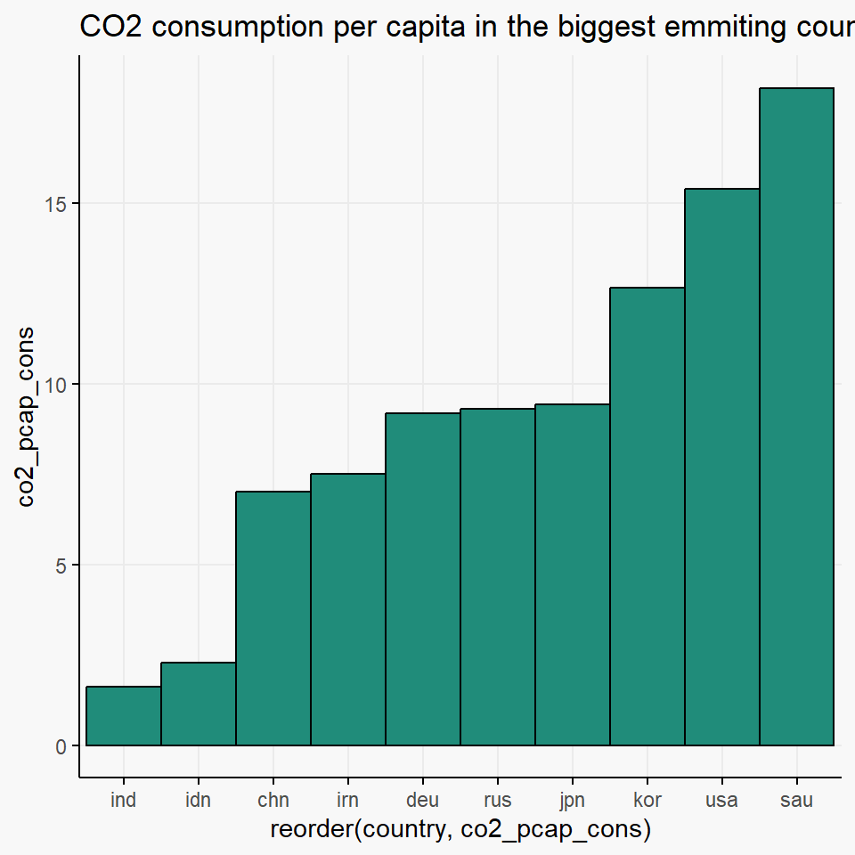

── Attaching core tidyverse packages ──────────────────────── tidyverse 2.0.0 ──
✔ dplyr 1.1.4 ✔ readr 2.1.5
✔ forcats 1.0.0 ✔ stringr 1.5.1
✔ ggplot2 3.5.2 ✔ tibble 3.2.1
✔ lubridate 1.9.4 ✔ tidyr 1.3.1
✔ purrr 1.0.4
── Conflicts ────────────────────────────────────────── tidyverse_conflicts() ──
✖ dplyr::filter() masks stats::filter()
✖ dplyr::lag() masks stats::lag()
ℹ Use the conflicted package (<http://conflicted.r-lib.org/>) to force all conflicts to become errorsWas ist eine gute Grafik?
 ::: aside
::: aside
:::
Eine gute Grafik sollte …
… eine Geschichte erzählen … helfen, auf das Wesentliche zu konzentrieren (datasaurus) … die Zusammenhänge möglichst “umfänglich” darzustellen. … (cool aussehen) … Kultur-, Personen-, Zeitunabhängig sein, soweit wie möglich
Datasaurus Dozen (quartets-Paket)
| dataset | mean_x | var_x | mean_y | var_y | cor |
|---|---|---|---|---|---|
| away | 54.27 | 281.23 | 47.83 | 725.75 | -0.06 |
| bullseye | 54.27 | 281.21 | 47.83 | 725.53 | -0.07 |
| circle | 54.27 | 280.90 | 47.84 | 725.23 | -0.07 |
| dino | 54.26 | 281.07 | 47.83 | 725.52 | -0.06 |
| dots | 54.26 | 281.16 | 47.84 | 725.24 | -0.06 |
| h_lines | 54.26 | 281.10 | 47.83 | 725.76 | -0.06 |
| high_lines | 54.27 | 281.12 | 47.84 | 725.76 | -0.07 |
| slant_down | 54.27 | 281.12 | 47.84 | 725.55 | -0.07 |
| slant_up | 54.27 | 281.19 | 47.83 | 725.69 | -0.07 |
| star | 54.27 | 281.20 | 47.84 | 725.24 | -0.06 |
| v_lines | 54.27 | 281.23 | 47.84 | 725.64 | -0.07 |
| wide_lines | 54.27 | 281.23 | 47.83 | 725.65 | -0.07 |
| x_shape | 54.26 | 281.23 | 47.84 | 725.22 | -0.07 |
Warning: The `size` argument of `element_line()` is deprecated as of ggplot2 3.4.0.
ℹ Please use the `linewidth` argument instead.

Darstellung von Größen
Manipulation von Achsen
Manipulation des Bildformats
set.seed(42)
my_weight <- data.frame(
month = factor(c("Januar", "Februar", "März", "April", "Mai", "Juni", "Juli", "August", "September", "Oktober", "November", "Dezember"),
levels = c("Januar", "Februar", "März", "April", "Mai", "Juni", "Juli", "August", "September", "Oktober", "November", "Dezember"),
ordered = TRUE),
weight = rnorm(12, 90, 5)/1000,
group = rep(1, 12)
)
ggplot(my_weight,
aes(x = month, y = weight, group = group)) +
geom_point() +
geom_line() +
labs(title = "Mein Gewicht 2024",
subtitle = "In metrischen Tonnen",
x = "Monat",
y = "Gewicht in t") +
ylim(0, 1000) +
theme_bg() +
theme(axis.text.x = element_text(angle = 90, vjust = 0.5, hjust=1))
Election Plot
https://storymaps.arcgis.com/stories/0e636a652d44484b9457f953994b212b Vielleicht mit Bundestagswahl?
Fehlender Kontext
Ausschnitt aus Zeitreihe, ohne KOntext schwer zu Interpretieren. Irgendwas mit Schuldenpaket z.B.? Am besten noch mit anderen Kategorien dazu - Co2 Data insgesamt ohne Population zeigen
Verteilungen Plotten
Eine Grafik ist kann nur einen Teil der Zusammenhänge darstellen
Im Schlechtesten Fall für Manipulation nutzbar
Black swann
Was mögt ihr an dieser Grafik/nicht?
Plot-Typen
Choosing the correct plot
https://www.data-to-viz.com/
Pulikum
Geschichte
- Gleiche sache auf verschiedene Arten darstellen -> was wirkt am meisten?
Purpose
- Exploratory vs. Explanatory
- Kann oft über reines Zeigen der Daten hinausgehen.
Joining with `by = join_by(country)`Warning: Removed 6 rows containing missing values or values outside the scale range
(`geom_text()`).
Data from Rockefeller Institute and Wikipedia.
Tufte
- So wenig Tinte wie möglich nutzen
- Alles nicht essentielle entfernen
- Redundanzen entferenen
Beispiel zeigen: Eins ist aufgeblasen, man braucht Zeit zur Orientierung. Ein anderes theme_tufte
Data-ink ratio
Beispiel zum Minimieren zeigen - Raincloud plots
Caveats
https://www.data-to-viz.com/caveats.html
Immer einen Plot zeigen, dann zusammen überlgen was daran schlecht ist, was verbessert werden kann.
Farben
Ganglienzellen übertragen keine Informationen über absolute Helligkeit, sondern über relative Helligkeit. ‣ Wie stark unterscheiden sich zwei Bereiche in ihrer Helligkeit? ‣ Wie stark hat sich eine Helligkeit gerade geändert? Allgemeine Lehre daraus: ‣ Visualisierung kann nicht gut darin sein, absolute Werte zu kommunizieren (Tabellen können das besser) ‣ Hingegen ist das visuelle System (und das Gehirn allgemein) extrem gut darin, Unterschiede und Veränderungen zu erkennen –> Beispiel bringen (Simultankontrast)
- Graustufen nicht für absolute oder kategorische Werte nutzen (mehr als vier können iwr nicht gut unterscheiden)
- Welche Farben wir wahrnehmen können (Exkurs Tierwelt?)
- Diese Webseite zur Auswahl von passenden Farben nutzen?
- RGB erklären (und die Addition im Gehirn?
Farbfehlsichtigkeiten
Farbsehtests
- Farbwahrnehmung braucht Helligkeit und Fläche
Anwendung in ggplot2: Farbskalen wählen
Takeaways
- Kommunizieren von der größtmöglichen Anzahl von Ideen in kürzester Zeit.
- Maximieren von Data-ink ratio
- Minimieren von Chart-junk
- Erhöhe Datendichte, Vervielfältige kleine Versionen der Abbildung für verschiedene Gruppen
Caveat Plots: See data to viz
Storytelling
Rolfs 7
Using Text/Annotations
Nutzen von Eigenschaften der Wahrnehmung
- Bewusste Wahrnehmung ignoriert Informationen und fügt hinzu
- Nähe
- Salienz (Farbe, Größe, Neigung) (Szafir, Haroz, Gleicher & Franconeri (2016))
- Hier würde das USA Bild passen (evtl. mit einem anderen Beispiel, das den Unterschied deutlich macht, z.B. keine andere Farbe, näher dran durch andere Achse)
- Harold et al., 2016: Lenken von Aufmerksamkeit
- Nothelfer et al., 2017: Redundatne Kodierung führt zu deutlich höherer Genauigkeit der Antworten und kürzeren Reaktionszeiten
Übung
Schlechte Grafiken verbessern: https://www.data-to-viz.com/caveats.html